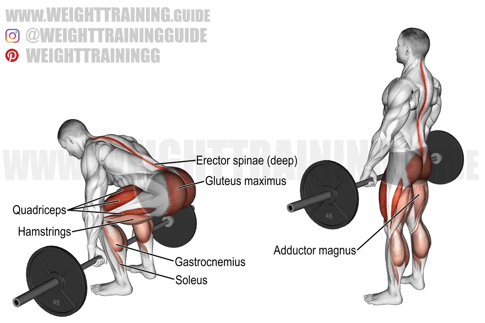
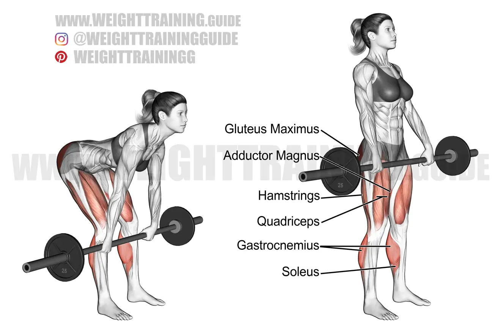
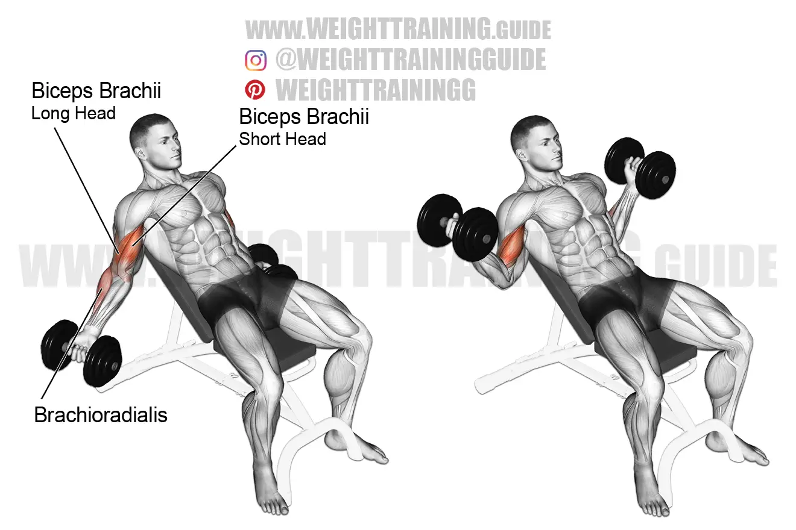

Warm Up
- Treadmill or Stationary Bike: 5-10 minutes
- Dynamic Stretches: leg swings, arm circles, etc.
Exercise 1: Conventional Deadlifts

- Sets: 5
- Reps: 5
- Tempo: 3-0-1
- Rest: 2-3 minutes
- Stand with your feet hip-width apart and your chest up.
- Hold the barbell with your hands slightly wider than shoulder-width apart.
- Lower your body as far as you can by pushing your hips back and bending your knees.
- Pause, then slowly push yourself back to the starting position.
Exercise 2: RDL's

- Sets: 2
- Since we did heavy RDL's the previous day, this day will be substantially lighter on this.
- Reps: 8
- Tempo: 3-0-1
- Rest: 2 minutes
- Hold either 2 dumbbells or a barbell about shoulder width apart.
- Slowly lower the weight down below the knees and then explode up.
- Don't go to low in order to keep this hamstring oriented
-
- Pause, then slowly push yourself back to the starting position.
Exercise 3: Lat pull downs
- Sets: 4
- Reps: 12
- Tempo: 3-0-1
- Rest: 1-2 minutes
- First pick a good amount of weight that you can do without breaking form.
- Find your most comfortable grip width (Close, middle or wide).
- Before pulling, retract your scapula and brace your core.
- Pull the bar to your chest and slowly release.
- This is one of the best upper back builders.
Exercise 4: Bicep curls

- Sets: 5
- Reps: 8
- Tempo: 3-0-1
- Rest: 1-2 minutes
- Pick a good weight.
- Stand with dumbbells preferably infront of a mirror so you can check your form.
- Retract your arm and twist your wrist so at the top of the movement your pinkies are faced up.
- Minimize swinging in order to isolate the muscle.
- The only joint active should be your elbow.
Return to Main Page